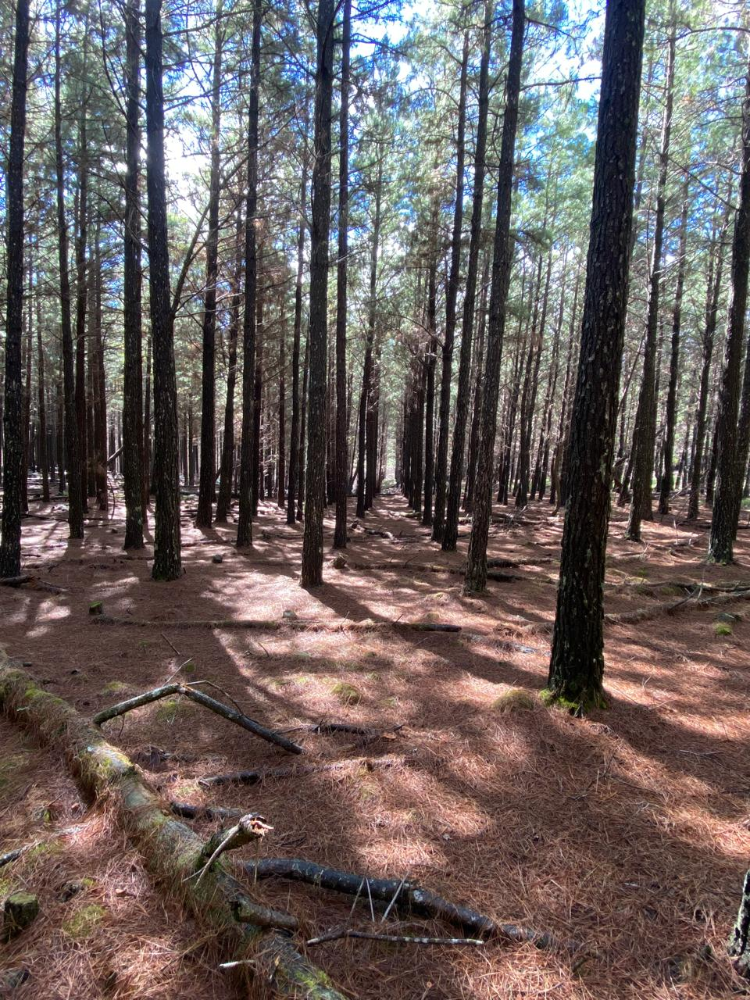

Inventário florestal
Caracterização de povoamentos e áreas florestais para apoiar avaliação e planejamento.
Do campo ao planejamento, transformamos informação florestal em segurança para decidir e eficiência para agir.
Apoiamos proprietários, gestores e organizações com serviços de campo, manejo, planejamento e apoio ambiental. Estas frentes reúnem o trabalho registrado pela DRS e os serviços que você definiu como prioritários.
Caracterização de povoamentos e áreas florestais para apoiar avaliação e planejamento.
Medições de volume, incluindo cubagem por sortimento em plantios florestais.
Análise de plantios florestais para acompanhar o estabelecimento, a condição do povoamento e a necessidade de intervenção.
Levantamentos com drone e mapeamento para apoiar a leitura e a avaliação de áreas florestais.
Acompanhamento de atividades como desbaste, poda, carregamento, marcação e outras operações de campo.
Levantamentos e apoio técnico em processos relacionados à vegetação, corte e avaliação de árvores.
Atividades ligadas ao Plano de Recuperação de Área Degradada, recomposição e controle de espécies invasoras.
Levantamentos de espécies nativas, estudos florísticos e instalação de parcelas permanentes.
Avaliações e análises técnicas florestais, conforme a demanda e o escopo de cada trabalho.
Sem dados confiáveis, decisões de manejo ficam mais incertas. A DRS combina presença em campo e tecnologia para dar clareza ao planejamento florestal.
Consideramos o objetivo do trabalho, as condições do local e a necessidade de quem toma a decisão.
O trabalho de campo e as ferramentas adequadas orientam a coleta de dados.
Informações organizadas para apoiar o manejo, o planejamento e os próximos passos.
A trajetória começou em campo: o primeiro serviço foi realizado em Alfredo Wagner, em dezembro de 2020, um dia antes da fundação oficial da DRS, também em 2020.
Alfredo Wagner, SC — primeiro trabalho florestal da trajetória, realizado um dia antes da fundação oficial da empresa.
Fundação da DRS Consultoria e Tecnologia Florestal. A empresa começou a construir sua trajetória com dedicação ao trabalho e persistência.
Curitibanos, SC — trabalho de pequeno porte em licenciamento ambiental, ampliando a atuação da empresa.

Registro de campo · PinusUm registro de campo da atuação da DRS em inventário de plantio de Pinus na Serra Catarinense.
Converse com a DRS ↗Explorar a linha do tempo completa ↗Conte o que você precisa. A equipe DRS pode ajudar a encontrar o serviço adequado para sua área.